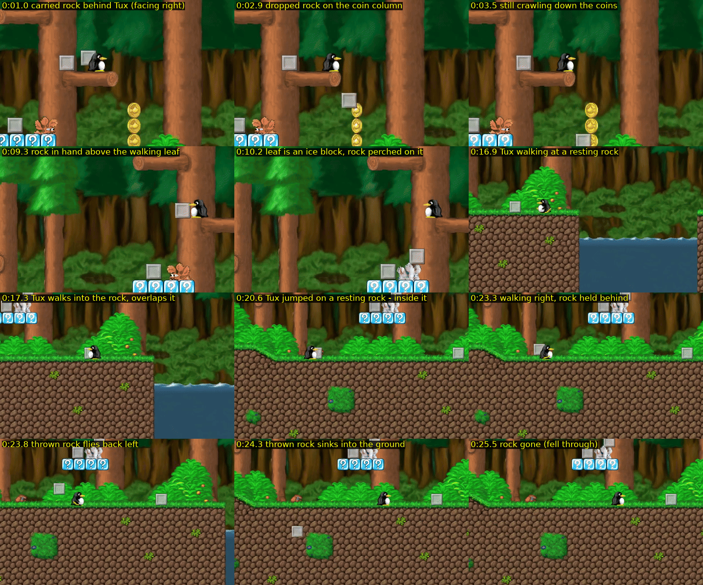
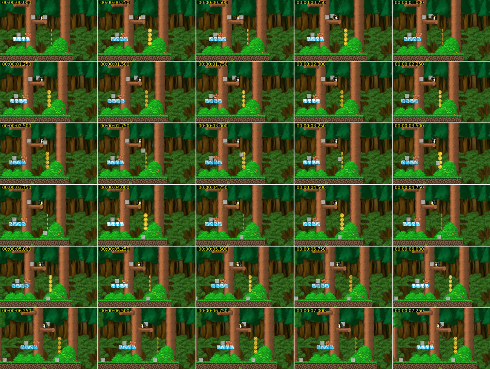
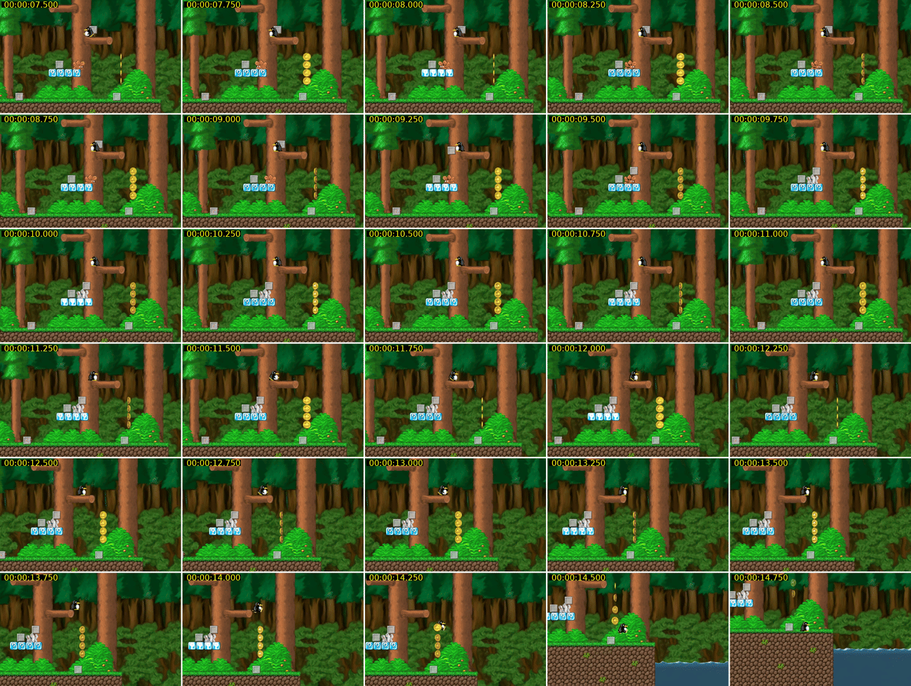
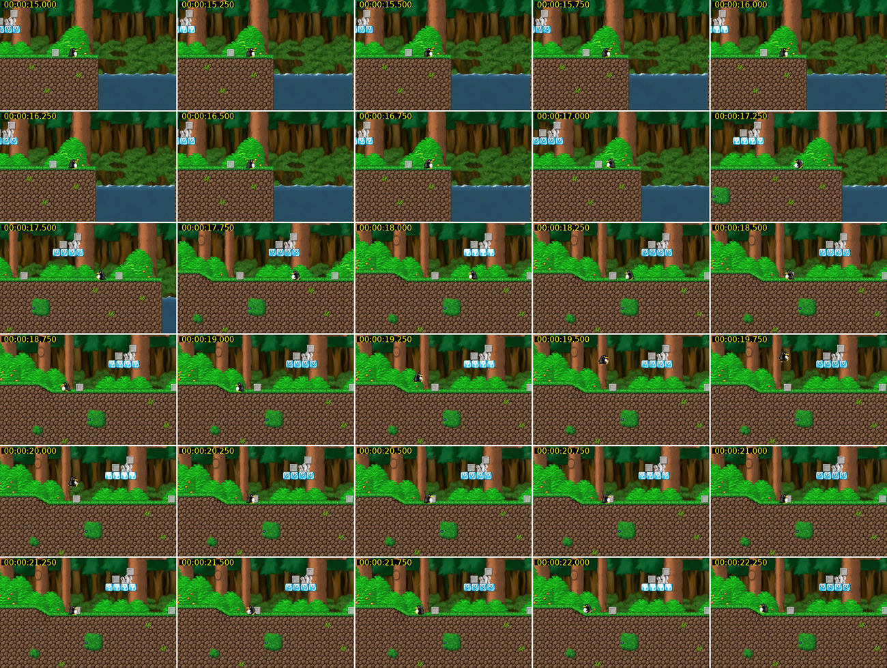
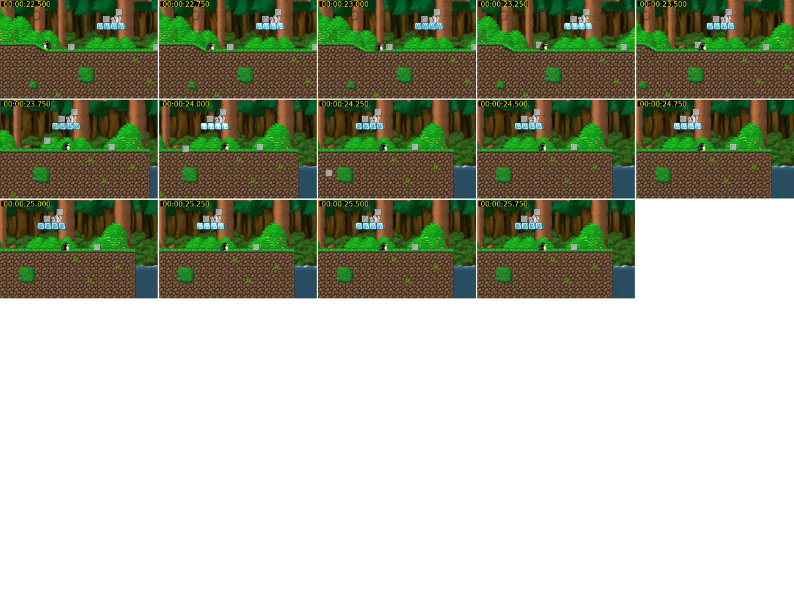

Eval: supertux__supertux_1398_mm
One dimension fails: Hardening – Difficulty (dim 16, [Fail - Trial Threshold Not Met]). This is Option A (7 trials), so exactly 1 of 4 with-image runs must pass, and 2 do (6rfz4NT and PDeVuwP, 7/7). No-image is 0/3 as required: each run misses the coin column and the frozen leaf, the two defects only the clip shows. Dim 4 scores 3 [Non-Fail - Image-carried Symptom]: every defect sits under a named element, and five of six are left to the clip with a same-rules comparison pointer. No with-image run took a defect for intended behavior. The other 17 dimensions score 5. Local oracle 1.0, nop 0.0 and an identical re-run (all with no network) match the CB runs exactly. Next step: re-run the with-image job on this unchanged bundle. If it is still 2/4 or more, remove 'how it falls' and re-run everything.
Scorecard
Every dimension in rubric order. Click a cell to see what is wrong (or the evidence, if it passed).
python -m py_compile tests/verifier.py succeeds. recording.mp4 decodes (ffprobe: h264 1280x720, 30 fps, 780 frames, 26.000 s, 2,571,782 B). Extra content: environment/bugs/bug_01..05.patch (injected bugs, applied and deleted in one Dockerfile RUN) and README.md. Neither is a fail. No CRLF in any patch or script.Tasks/supertux__supertux_1398_mm/ and Trials/ as sibling root folders. Trials/ holds without_images/ (3 runs: Cg3CUd4, Gdf5AUp, ktEgqvp) and with_images/ (4 runs: 6rfz4NT, GHMqPaD, PDeVuwP, yCYGP4T), so 7 trials = Option A. CB Oracle/ and Nop/ runs are present too. They are folders here, not archives yet./app/.harbor_assets/recording.mp4 matches the Dockerfile COPY assets/recording.mp4 /app/.harbor_assets/, and the file is present in the local oracle container (2,571,782 B). In the no-image runs the directory is empty (Cg3CUd4 step 2: 'No such file or directory'; ktEgqvp step 23: '/app/.harbor_assets/ is empty').recording.mp4 | bug_video | the buggy build (contact sheets 02–05, key moments in 01). All six defects are visible and match the local nop values: rock 21 px behind Tux; thrown rock 50 px backwards; thrown rock drops through the floor (bottom y 2996.9); Tux 32 px inside a resting rock and walking through one (758 vs 322); leaf still standing after the hit; rock 94 vs 43 frames past the coins | neutral name; description 'Uncut 26 s gameplay recording in SuperTux's own forest level (world2/walking_leaves.stl) with a few extra objects, a column of coins and a walking leaf placed near the start' | true: 26.0 s, no cuts, and the level exists in the image (data/levels/world2/walking_leaves.stl, 'Walking Leaves') | no: every with-image run treated it as the bug clip.
f2p vs asset (preconditions → asset state → same branch? → cross-check):
- DroppedRockFallsPastCoinsLikeThroughOpenAir: a rock put down at the ledge end over 3 coins → the clip's drop from the branch end onto a 4-coin column → same Rock::collision hurt branch (hit.bottom, vy > 200 → set_velocity_y(0) on a COLGROUP_TOUCHABLE coin) → yCYGP4T and all 3 no-image runs left that branch alone and fail with nop's exact '94 vs 43'. Three different coin fixes pass (Coin cast + ABORT_MOVE, TOUCHABLE check, BadGuy-only hurt).
- CarriedRockIsHeldInFrontOfTux: walk right then left holding a rock → rock behind Tux facing right (0:01.0, 0:23.3) and facing left (0:07.6–0:09.2) → position_grabbed_object → fixed by all 7 trials, so all pass.
- RockThrownWhileWalkingFliesForward: let go mid-stride → 0:23.8 flies back → ungrab direction → fixed by all 7 (m_dir or the flipped comparison), so all pass.
- ThrownRockLandsAndStaysOnTheGround: moving release → 0:24.3 sinks → group restore in ungrab → fixed by all 7, so all pass.
- TuxCanStandOnARestingRock / TuxWalkingIntoARestingRockIsStoppedByIt: Tux vs. a never-carried rock → 0:17.3 and 0:20.6 → Player::collides override → GHMqPaD left the override and fails both with nop's exact values (32 px; 758 vs 322).
- RockDroppedOnAWalkingLeafKnocksItOut: rock dropped on a walking leaf → 0:09.3–0:10.2 leaf freezes, rock perched → Rock::collision → collision_tile(HURTS) → BadGuy::collision_tile freezes → the 3 no-image runs never touched badguy.cpp and fail; the 4 with-image runs fixed it and pass.
Step 7 (injected bugs bug_01..05): every one is visible in the clip. A fix that skips one leaves a visible defect and a real bug on a supported path (carrying and throwing, Tux on rocks, enemies hit by HURTS tiles), so skipping one is an incomplete fix, not a valid alternative. Defect 0 is upstream issue #1398 at the base commit.
temporal_interaction is one of the seven values. The evidence is a 26 s gameplay video of a sequence of interactions, the moving form of an ordered frame sequence. Tags include temporal_interaction and 2d_video./app/.harbor_assets/recording.mp4. Dockerfile: COPY assets/recording.mp4 /app/.harbor_assets/ (only the video, never ASSET_MANIFEST).git apply --check /solution/fix.patch → FIX_APPLY_CHECK=OK in the oracle and in the re-run. solve.sh → OK. Diff stat: 4 files, +7/−21. The CB oracle captured the same 4023-byte, 4-file patch.diff --git paths = files_edited = {src/badguy/badguy.cpp, src/object/player.cpp, src/object/player.hpp, src/object/rock.cpp} (set-equal, 4 = 4). No test, doc, lockfile or changeset path.- coins: through_coins ≤ open_air + 2 frames; the coin count is unchanged.
- carry: rock centre x beyond Tux centre x in the facing direction.
- throw: more than 16 px forward in 0.25 s (the base throw is 200 px/s, so throws down to about 64 px/s pass).
- landing: |bottom − 416| ≤ 2, and still within 1 px over 1 s.
- Tux: |rock top − Tux bottom| ≤ 2, and Tux right ≤ rock left + 2.
- leaf: no enemy with top < 416 after 4 s.
Equivalence table (alternative | correct in repo? | test accepts):
- coins: TOUCHABLE-group check (golden, PDeVuwP) | yes | yes. Coin cast + ABORT_MOVE (6rfz4NT) | yes | yes. BadGuy-only hurt + kill_fall (GHMqPaD) | valid for coins | yes (coin test passed).
- carry:
if (LEFT) pos.x -= w (golden, 6rfz4NT) | yes | yes. w * (RIGHT ? 0 : 1) (PDeVuwP, GHMqPaD) | yes | yes.- throw:
ungrab(m_dir) (golden, 6rfz4NT, GHMqPaD, ktEgqvp) | yes | yes. Flipped dest_ comparison (PDeVuwP) | yes | yes.- sink: set_group in ungrab (golden, all trials) | yes | yes.
- Tux vs. rock: remove the override (golden, yCYGP4T) | yes | yes. Empty override body (PDeVuwP) | yes | yes. Skip only m_grabbed_object (6rfz4NT) | yes | yes.
- leaf: restore the ICE check (golden, all with-image runs) | yes | yes.
Every failing f2p in the trials is a defect left unfixed, with nop's exact value: 94 vs 43 frames, 32 px, 758 vs 322, leaf still standing. No valid form was rejected. 'Fix only what the evidence shows' is the golden fix itself, since each f2p grades one defect the clip shows (see dimension 6).
docker run --network none and finished normally. The oracle re-run is identical to the oracle, outcomes and messages, and local nop reproduces CB Nop byte for byte on every failure value, on a different machine.Delivery gate
Process checks run locally or read from the submitted runs. Each failure is scored under the dimension it belongs to, not as an extra dimension.
Trials
3 no-image runs (pass@3, all must fail) and 4 with-image runs (pass@4, exactly 1 must pass). Rewards come from each run's verifier/reward.txt.
| Trial | Mode | Reward | f2p | p2p | Min | Failed tests |
|---|---|---|---|---|---|---|
task_without_images__Cg3CUd4 | no-image | 0.0 | 5/7 | 3/3 | 9.1 | DroppedRockFallsPastCoinsLikeThroughOpenAir RockDroppedOnAWalkingLeafKnocksItOut |
task_without_images__Gdf5AUp | no-image | 0.0 | 5/7 | 3/3 | 6.2 | DroppedRockFallsPastCoinsLikeThroughOpenAir RockDroppedOnAWalkingLeafKnocksItOut |
task_without_images__ktEgqvp | no-image | 0.0 | 5/7 | 3/3 | 5.0 | DroppedRockFallsPastCoinsLikeThroughOpenAir RockDroppedOnAWalkingLeafKnocksItOut |
task_with_images__6rfz4NT | with-image | 1.0 | 7/7 | 3/3 | 6.0 | — |
task_with_images__GHMqPaD | with-image | 0.0 | 5/7 | 3/3 | 9.4 | TuxCanStandOnARestingRock TuxWalkingIntoARestingRockIsStoppedByIt |
task_with_images__PDeVuwP | with-image | 1.0 | 7/7 | 3/3 | 8.4 | — |
task_with_images__yCYGP4T | with-image | 0.0 | 6/7 | 3/3 | 9.3 | DroppedRockFallsPastCoinsLikeThroughOpenAir |
Issues & suggested fixes
Hardening – Difficulty (Model Trial Fails) 2 · [Fail - Trial Threshold Not Met]
What is wrong. With-image pass rate is 2/4; Option A requires exactly 1/4.
Suggested fix. Escalation ladder (cheapest first):
1. Re-run only the with-image job on this exact bundle. Nothing changes, so the checksum stays 49ceb6d8 and the no-image 0/3 still counts. Each failing run missed a different single defect, so the result can land on 1/4 by chance.
2. If it is still 2/4 or more, harden the with-image side only. Remove 'how it falls' from the list. The coin crawl stays covered by 'how it and the other things in the level affect each other' (task.toml already says that element covers the coin column), so dimension 4 stays 3. This can only make no-image harder. Update difficulty_explanation to match, then re-run all 7 trials plus Oracle/Nop (new checksum).
3. Don't move to Option B (1–2/8) at the current rate (about 50%); it would most likely fail too.
Instruction – Symptom Specificity 3 · [Non-Fail - Image-carried Symptom]
What is wrong. Not a fail. Five of the six exact defects are carried only by the clip (by design). Record [Non-Fail - Image-carried Symptom] in the feedback.
Suggested fix. Optional, not needed to pass. A 5 would need each defect in words, e.g. 'a dropped one slows to a crawl next to other objects' or 'a creature it lands on turns to ice'. Coins and the leaf are the only two defects that keep no-image at 0/3, so stating them would probably break dimension 16. Keep the 3. Any instruction.md edit changes the task checksum, so every trial and the Oracle/Nop would have to be re-run.
Dimension details
1. Structure – Task Bundle Files 5 · Pass
| Evidence | All 11 fixed files exist and are non-empty: task.toml 7187 B, instruction.md 1087 B, evidence_bundle.json 1104 B, environment/Dockerfile 4307 B, environment/assets/ASSET_MANIFEST.json 541 B, solution/fix.patch 4023 B, solution/solve.sh 349 B, tests/config.json 751 B, tests/test.patch 18211 B, tests/test.sh 10145 B, tests/verifier.py 8158 B. The 3 JSON files parse; python -m py_compile tests/verifier.py succeeds. recording.mp4 decodes (ffprobe: h264 1280x720, 30 fps, 780 frames, 26.000 s, 2,571,782 B). Extra content: environment/bugs/bug_01..05.patch (injected bugs, applied and deleted in one Dockerfile RUN) and README.md. Neither is a fail. No CRLF in any patch or script. |
|---|---|
| What is wrong | Nothing found. |
| Suggested fix |
2. Structure – Deliverables & Packaging 5 · Pass
| Evidence | task108/Attempt5 has Tasks/supertux__supertux_1398_mm/ and Trials/ as sibling root folders. Trials/ holds without_images/ (3 runs: Cg3CUd4, Gdf5AUp, ktEgqvp) and with_images/ (4 runs: 6rfz4NT, GHMqPaD, PDeVuwP, yCYGP4T), so 7 trials = Option A. CB Oracle/ and Nop/ runs are present too. They are folders here, not archives yet. |
|---|---|
| What is wrong | Nothing found. |
| Suggested fix | At submission, tar each root folder on its own: Tasks.tar.gz, Trials.tar.gz, Oracle.tar.gz, Nop.tar.gz. |
3. Instruction – Requires Visual Evidence 5 · Pass
| Evidence | Text alone: it states one defect in words (the carried object is on the wrong side of Tux). It lists five more areas only by abstract type (how one is let go, how it falls, where it comes to rest, how it and the other things in the level affect each other, what happens when Tux meets one lying on the ground) and never says what is wrong with them. It never mentions coins, ice, freezing, an enemy, sinking or passing through. A developer can't fix all six defects from the text. The no-image runs confirm this: 0/3 pass, and each scores 5/7 f2p, missing exactly the two defects that only the clip shows (coin column, frozen leaf). Leak check: no repo name, URL, file, class, function, mechanism, timestamp or number. 'Tux' and 'forest level' only name what is on screen. Path: /app/.harbor_assets/recording.mp4 matches the Dockerfile COPY assets/recording.mp4 /app/.harbor_assets/, and the file is present in the local oracle container (2,571,782 B). In the no-image runs the directory is empty (Cg3CUd4 step 2: 'No such file or directory'; ktEgqvp step 23: '/app/.harbor_assets/ is empty'). |
|---|---|
| What is wrong | Nothing found. |
| Suggested fix |
4. Instruction – Symptom Specificity 3 · Non-Fail
[Non-Fail - Image-carried Symptom]
| Evidence | Table (element | defect | expected | comparison pointer | clue left to the clip | described correctly?): 1. The carried object ('while Tux carries one') | TEXT: 'it is on the wrong side of him' | implied | – | facing right at 0:01.0 and 0:23.3, facing left at 0:07.6–0:09.2 | yes (nop: rock centre 21 px behind Tux). 2. 'how one is let go' | IMAGE only | 'behave like they normally do' | 'don't match the same kind of thing elsewhere in the same clip' | the rock thrown while walking flies back, 0:23.8 | yes. 3. 'how it falls' | IMAGE only | same | free falls elsewhere in the clip (0:09.3 drop, 0:23.8 throw) | crawls down the coin column, 0:02.75–0:03.75 | yes. 4. 'where it comes to rest' | IMAGE only | same | other rocks rest on top of the ground | the thrown rock sinks into the ground and disappears, 0:24.3–0:25.5 | yes. 5. 'how it and the other things in the level affect each other' | IMAGE only | same | 'look out of place in this level' | the walking leaf turns into an ice block with the rock on top, 0:09.3–0:10.2 (and the coins slow the rock) | yes. 6. 'what happens when Tux meets one that is lying on the ground' | IMAGE only | same | – | Tux walks into a resting rock (0:17.3) and sinks into one after jumping on it (0:20.6) | yes. Every defect sits under a named element, and none is described wrongly. Five of the six exact defects are left to the clip, behind a comparison pointer, so this is the middle option and not a 5. With-image trajectories (all 4 read; final summaries quoted): 6rfz4NT and PDeVuwP name all six defects. GHMqPaD names all six, but credits 'Tux walks through it on the ground' to the collision-group bug ('Rock::ungrab() now always makes it solid again'), so it never removes the Player::collides override. Both Tux moments (0:17.3, 0:20.6) come before the only moving throw (0:23.5), so that theory doesn't fit the clip: a reasoning miss, not a text problem. yCYGP4T names five and never mentions coins: the word appears only in a cat rock.cpp include line. That is a miss, not a reading of the crawl as intended. No run called any defect intended behavior. GHMqPaD, PDeVuwP and yCYGP4T each also ruled out a real non-defect (a red mushroom showing through the slightly see-through rock). Per defect, with-image: carry 4/4, throw 4/4, sink 4/4, leaf 4/4, Tux vs. resting rock 4/4 seen and 3/4 fixed, coins 3/4. |
|---|---|
| What is wrong | Not a fail. Five of the six exact defects are carried only by the clip (by design). Record [Non-Fail - Image-carried Symptom] in the feedback. |
| Suggested fix | Optional, not needed to pass. A 5 would need each defect in words, e.g. 'a dropped one slows to a crawl next to other objects' or 'a creature it lands on turns to ice'. Coins and the leaf are the only two defects that keep no-image at 0/3, so stating them would probably break dimension 16. Keep the 3. Any instruction.md edit changes the task checksum, so every trial and the Oracle/Nop would have to be re-run. |
5. Instruction – Task Type 5 · Pass
| Evidence | task_type = temporal_interaction: 'Fix a defect that only appears across a sequence of interactions / state transitions' (Guidelines Step IV). The instruction describes a pick-up → carry → let go → fall → come to rest → Tux meets a resting one sequence, plus what the object does to other things in the level. Every defect shows only across those transitions (e.g. the throw direction only shows when Tux lets go mid-stride, and the sinking only after a moving release). The text fits the type. |
|---|---|
| What is wrong | Nothing found. |
| Suggested fix |
6. Image – Evidence Quality 5 · Pass
| Evidence | Naming table (file | role | what the frames show | what name/role/text claim | true? | agents confused?): recording.mp4 | bug_video | the buggy build (contact sheets 02–05, key moments in 01). All six defects are visible and match the local nop values: rock 21 px behind Tux; thrown rock 50 px backwards; thrown rock drops through the floor (bottom y 2996.9); Tux 32 px inside a resting rock and walking through one (758 vs 322); leaf still standing after the hit; rock 94 vs 43 frames past the coins | neutral name; description 'Uncut 26 s gameplay recording in SuperTux's own forest level (world2/walking_leaves.stl) with a few extra objects, a column of coins and a walking leaf placed near the start' | true: 26.0 s, no cuts, and the level exists in the image (data/levels/world2/walking_leaves.stl, 'Walking Leaves') | no: every with-image run treated it as the bug clip. f2p vs asset (preconditions → asset state → same branch? → cross-check): - DroppedRockFallsPastCoinsLikeThroughOpenAir: a rock put down at the ledge end over 3 coins → the clip's drop from the branch end onto a 4-coin column → same Rock::collision hurt branch (hit.bottom, vy > 200 → set_velocity_y(0) on a COLGROUP_TOUCHABLE coin) → yCYGP4T and all 3 no-image runs left that branch alone and fail with nop's exact '94 vs 43'. Three different coin fixes pass (Coin cast + ABORT_MOVE, TOUCHABLE check, BadGuy-only hurt). - CarriedRockIsHeldInFrontOfTux: walk right then left holding a rock → rock behind Tux facing right (0:01.0, 0:23.3) and facing left (0:07.6–0:09.2) → position_grabbed_object → fixed by all 7 trials, so all pass. - RockThrownWhileWalkingFliesForward: let go mid-stride → 0:23.8 flies back → ungrab direction → fixed by all 7 (m_dir or the flipped comparison), so all pass. - ThrownRockLandsAndStaysOnTheGround: moving release → 0:24.3 sinks → group restore in ungrab → fixed by all 7, so all pass. - TuxCanStandOnARestingRock / TuxWalkingIntoARestingRockIsStoppedByIt: Tux vs. a never-carried rock → 0:17.3 and 0:20.6 → Player::collides override → GHMqPaD left the override and fails both with nop's exact values (32 px; 758 vs 322). - RockDroppedOnAWalkingLeafKnocksItOut: rock dropped on a walking leaf → 0:09.3–0:10.2 leaf freezes, rock perched → Rock::collision → collision_tile(HURTS) → BadGuy::collision_tile freezes → the 3 no-image runs never touched badguy.cpp and fail; the 4 with-image runs fixed it and pass. Step 7 (injected bugs bug_01..05): every one is visible in the clip. A fix that skips one leaves a visible defect and a real bug on a supported path (carrying and throwing, Tux on rocks, enemies hit by HURTS tiles), so skipping one is an incomplete fix, not a valid alternative. Defect 0 is upstream issue #1398 at the base commit. |
|---|---|
| What is wrong | Nothing found. |
| Suggested fix |
7. Metadata – task_type 5 · Pass
| Evidence | temporal_interaction is one of the seven values. The evidence is a 26 s gameplay video of a sequence of interactions, the moving form of an ordered frame sequence. Tags include temporal_interaction and 2d_video. |
|---|---|
| What is wrong | Nothing found. |
| Suggested fix |
8. Evidence – Chain Consistency 5 · Pass
| Evidence | All four references agree. File on disk: environment/assets/recording.mp4, 2,571,782 B, sha256 f7f5bbcf…6859. ASSET_MANIFEST.json: same file, container_path, bytes and sha256. evidence_bundle.json: local_path /app/.harbor_assets/recording.mp4, same bytes and sha256. instruction.md: /app/.harbor_assets/recording.mp4. Dockerfile: COPY assets/recording.mp4 /app/.harbor_assets/ (only the video, never ASSET_MANIFEST). |
|---|---|
| What is wrong | Nothing found. |
| Suggested fix |
9. Golden Fix – Applies Cleanly 5 · Pass
| Evidence | Local image qc_st1398:task built from environment/ (BUILD_EXIT=0). At HEAD 534ea93 (tag harbor_base): git apply --check /solution/fix.patch → FIX_APPLY_CHECK=OK in the oracle and in the re-run. solve.sh → OK. Diff stat: 4 files, +7/−21. The CB oracle captured the same 4023-byte, 4-file patch. |
|---|---|
| What is wrong | Nothing found. |
| Suggested fix |
10. Golden Fix – Source-Only Scope 5 · Pass
| Evidence | diff --git paths = files_edited = {src/badguy/badguy.cpp, src/object/player.cpp, src/object/player.hpp, src/object/rock.cpp} (set-equal, 4 = 4). No test, doc, lockfile or changeset path. |
|---|---|
| What is wrong | Nothing found. |
| Suggested fix |
11. Tests – Implementation Overfit 5 · Pass
| Evidence | All assertions compare positions, frame counts or object existence with tolerances. There are no string, enum, colour or serialized values, so the grammar check reduces to the tolerances: - coins: through_coins ≤ open_air + 2 frames; the coin count is unchanged. - carry: rock centre x beyond Tux centre x in the facing direction. - throw: more than 16 px forward in 0.25 s (the base throw is 200 px/s, so throws down to about 64 px/s pass). - landing: |bottom − 416| ≤ 2, and still within 1 px over 1 s. - Tux: |rock top − Tux bottom| ≤ 2, and Tux right ≤ rock left + 2. - leaf: no enemy with top < 416 after 4 s. Equivalence table (alternative | correct in repo? | test accepts): - coins: TOUCHABLE-group check (golden, PDeVuwP) | yes | yes. Coin cast + ABORT_MOVE (6rfz4NT) | yes | yes. BadGuy-only hurt + kill_fall (GHMqPaD) | valid for coins | yes (coin test passed). - carry: if (LEFT) pos.x -= w (golden, 6rfz4NT) | yes | yes. w * (RIGHT ? 0 : 1) (PDeVuwP, GHMqPaD) | yes | yes.- throw: ungrab(m_dir) (golden, 6rfz4NT, GHMqPaD, ktEgqvp) | yes | yes. Flipped dest_ comparison (PDeVuwP) | yes | yes.- sink: set_group in ungrab (golden, all trials) | yes | yes. - Tux vs. rock: remove the override (golden, yCYGP4T) | yes | yes. Empty override body (PDeVuwP) | yes | yes. Skip only m_grabbed_object (6rfz4NT) | yes | yes. - leaf: restore the ICE check (golden, all with-image runs) | yes | yes. Every failing f2p in the trials is a defect left unfixed, with nop's exact value: 94 vs 43 frames, 32 px, 758 vs 322, leaf still standing. No valid form was rejected. 'Fix only what the evidence shows' is the golden fix itself, since each f2p grades one defect the clip shows (see dimension 6). |
|---|---|
| What is wrong | Nothing found. |
| Suggested fix | Non-graded note: the Known-limits line in task.toml says the leaf test accepts a squish. That is not true. Scene::step calls Sector::update, which never advances g_game_time; only ScreenManager does (screen_manager.cpp:507). So a squished enemy never reaches remove_me() (badguy.cpp:206-209, timer-gated) and would fail the test. This is not overfit: every object in the repo that knocks out an enemy uses kill_fall (block.cpp:120, hurting_platform.cpp:40, explosion.cpp:153, icecrusher.cpp:158), and the rock's own HURTS path reaches kill_fall too. Correct that sentence the next time task.toml changes anyway. |
12. Tests – f2p/p2p Identifier Validity 5 · Pass
| Evidence | task.toml f2p/p2p and tests/config.json are identical, same order (7 f2p + 3 p2p). Every ID, in 'RockBehaviour <name>' form, matches exactly one testcase in all 12 JUnit reports: 7 trials, CB Oracle/Nop, local oracle/nop/re-run. Each report has 10 testcases. verifier.py resolves them by its 'classname name' key. |
|---|---|
| What is wrong | Nothing found. |
| Suggested fix |
13. Tests – p2p Classification 5 · Pass
| Evidence | CarriedRockMovesAlongWithTux, PutDownRockLandsOnTheGround and RockDroppedOnARestingRockStaysOnTop pass 3/3 on local nop, local oracle, local re-run, CB Nop, CB Oracle and all 7 trials. |
|---|---|
| What is wrong | Nothing found. |
| Suggested fix |
14. Tests – Discriminating (f2p) 5 · Pass
| Evidence | Nop (local and CB): 0/7 f2p. Oracle (local twice, plus CB): 7/7. Local nop failure values are identical to CB Nop's for every testcase and message (e.g. 'actual: 94 vs 43'; '-50 vs 16'; bottom 2996.852783203125; 'is 32'; '758.404 vs 322'; 'leaf_still_there Actual: true'). |
|---|---|
| What is wrong | Nothing found. |
| Suggested fix |
15. Tests – Determinism 5 · Pass
| Evidence | The tests step the real Sector at a fixed 1/64 s per frame and drive Tux through the scripting controller. They use the VIDEO_NULL video system, SDL dummy drivers and disabled sound. Nothing reads the wall clock or the network, and g_game_time stays constant, so timers are frozen, which is still deterministic. test.sh installs nothing (cmake re-configure and an incremental build only). All three local runs used docker run --network none and finished normally. The oracle re-run is identical to the oracle, outcomes and messages, and local nop reproduces CB Nop byte for byte on every failure value, on a different machine. |
|---|---|
| What is wrong | Nothing found. |
| Suggested fix | Optional, only with another change that forces a re-run: set [verifier] network_mode = "no-network". The verifier doesn't need the network (shown above), and 'public' is just broader than needed. |
16. Hardening – Difficulty (Model Trial Fails) 2 · Fail
[Fail - Trial Threshold Not Met]
| Evidence | 7 trials, so Option A applies. No-image 0/3 meets the rule: Cg3CUd4, Gdf5AUp and ktEgqvp each score 5/7, failing DroppedRockFallsPastCoinsLikeThroughOpenAir and RockDroppedOnAWalkingLeafKnocksItOut, with /app/.harbor_assets empty. With-image 2/4 does not: 6rfz4NT = 1.0 (7/7, 6.0 min) and PDeVuwP = 1.0 (7/7, 8.4 min). GHMqPaD = 0.0 (5/7, both Tux-vs-rock tests) and yCYGP4T = 0.0 (6/7, coins). Option A needs exactly 1/4. Checksum: Oracle, Nop and the 4 with-image trials share lock sha256:49ceb6d8. All 17 files listed in task_manifest.json match the bundle on disk. The no-image runs use the stripped variant, sha256:5309d9da. Every trial prompt contains the current instruction.md text. |
|---|---|
| What is wrong | With-image pass rate is 2/4; Option A requires exactly 1/4. |
| Suggested fix | Escalation ladder (cheapest first): 1. Re-run only the with-image job on this exact bundle. Nothing changes, so the checksum stays 49ceb6d8 and the no-image 0/3 still counts. Each failing run missed a different single defect, so the result can land on 1/4 by chance. 2. If it is still 2/4 or more, harden the with-image side only. Remove 'how it falls' from the list. The coin crawl stays covered by 'how it and the other things in the level affect each other' (task.toml already says that element covers the coin column), so dimension 4 stays 3. This can only make no-image harder. Update difficulty_explanation to match, then re-run all 7 trials plus Oracle/Nop (new checksum). 3. Don't move to Option B (1–2/8) at the current rate (about 50%); it would most likely fail too. |
17. Hardening – Real & Feasible 5 · Pass
| Evidence | Defect 0 is the real upstream issue #1398 (base d2c892e, fixed in PR #1449 by the TOUCHABLE check). The injected bugs are coherent slips a developer could make: a flipped side factor, an inverted comparison, a group restore moved into a branch that never runs, an over-broad collides override, and a 'simplified' freeze branch. Each is visible in the clip. The fixes are what a real developer would write: two with-image agents wrote them independently, in three different forms per defect, and passed. Nothing needs an unnatural fix. |
|---|---|
| What is wrong | Nothing found. |
| Suggested fix |
18. Gate – Oracle/Nop 5 · Pass
| Evidence | Local (this review, qc_st1398:task, --network none): oracle 1.0 (f2p 7/7, p2p 3/3); nop 0.0 (0/7, 3/3); oracle re-run 1.0, identical. Every run printed the stage banners ('captured submission.patch', 'applying test.patch', 'running f2p + p2p tests', 'computing reward') and 'reward='. None printed 'could not apply test.patch'. CB: Oracle DURkPv8 1.0 (7/7, 3/3, 11.7 min) and Nop ggcCsN9 0.0 (0/7, 3/3, 1.8 min), on the same lock as the with-image trials. |
|---|---|
| What is wrong | Nothing found. |
| Suggested fix |
19. Unauditable 5 · Pass
| Evidence | A complete, coherent bundle with all trials, oracle and nop. Every dimension could be audited. |
|---|---|
| What is wrong | Nothing found. |
| Suggested fix |
Visual evidence




